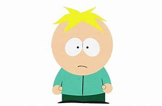

BUTTERS

Leopold "Butters" Stotch é um dos personagens mais inocentes e ingênuos de South Park.
Sempre otimista e disposto a agradar, ele frequentemente acaba sendo alvo das manipulações
de Eric Cartman e das travessuras dos colegas. Apesar de sua natureza dócil,
Butters tem momentos de rebeldia, como quando assume a identidade do maligno
Professor Caos. Seu relacionamento com os pais é conturbado, pois eles o castigam
severamente por motivos banais. Seu jeito amável e sua ingenuidade fazem dele um dos
personagens mais queridos da série.
VOLTAR